资源
正文
MCP 是什么
MCP（Model Context Protocol）模型上下文协议由 Claude 的母公司 Anthropic 在 24 年底开源发布：
今天，我们开源了模型上下文协议 （MCP），这是一种将 AI 助手连接到数据所在系统（包括内容存储库、业务工具和开发环境）的新标准。其目的是帮助前沿模型产生更好、更相关的响应。
随着人工智能助手获得主流采用，该行业在模型能力方面投入巨资，在推理和质量方面取得了快速进步。然而，即使是最复杂的模型也会受到与数据隔离的限制，这些模型被困在信息孤岛和遗留系统后面。每个新数据源都需要自己的自定义实现，这使得真正互联的系统难以扩展。
MCP 解决了这一挑战。它提供了一个通用的、开放的标准，用于将人工智能系统与数据源连接起来，用单一协议取代零散的集成。其结果是一种更简单、更可靠的方式，让人工智能系统能够访问所需的数据。
在传统方法中，我们需要手动从浏览器、文件系统、数据库、Github 等手动截图或复制文本给 LLM 与其对话。
MCP 通过标准化的协议自动化这一步骤。MCP 服务作为 AI 与外部工具的中间层。
每个 MCP 服务都专精于一类的工作。MCP 服务本质上是一个 NodeJS 或 Python 程序，通过 stdio（标准输入通道）与 AI 通信。
{kind=link}
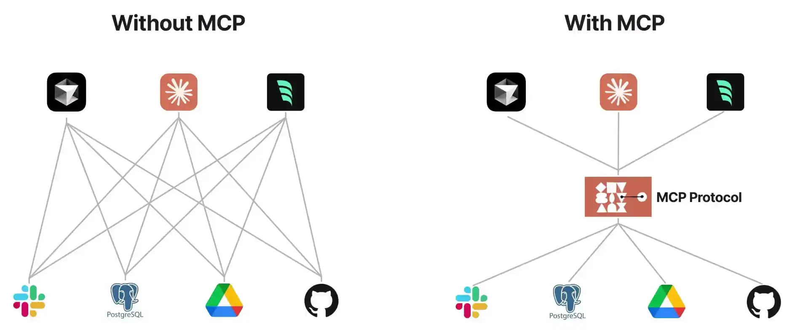
MCP 协议整合了各家大模型的 function call 标准。市面上几乎所有的大模型几乎都可以接入 MCP。
实战演示
准备工作
视频中列举出的支持 MCP 的客户端：
- Cursor
- Cline（开源免费）
- WindSurf
- Claude App
在 VSC 中下载并安装这个插件。
{kind=link}
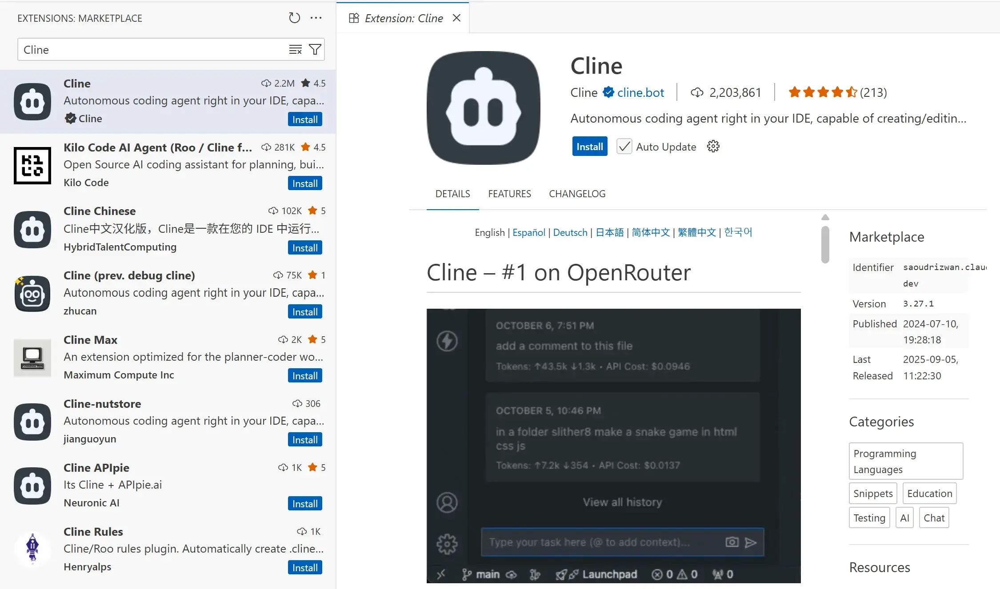
登陆后设置该插件，可以选择 OpenRouter（提供免费的 DeepSeek V3）。
在 OpenRouter 中创建一个 Key：
{kind=link}
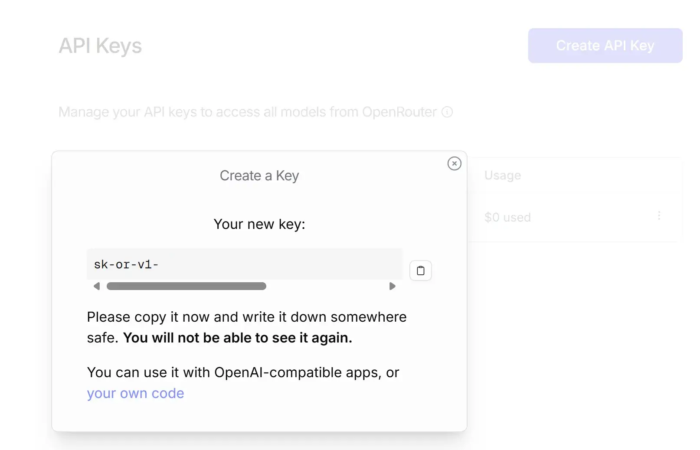
设置 Cline：
API Provider选择OpenRouterOpenRouter API Key输入所给出的 key（You will not be able to see it again.）Model选择deepseek/deepseek-chat-v3.1:free
{kind=link}
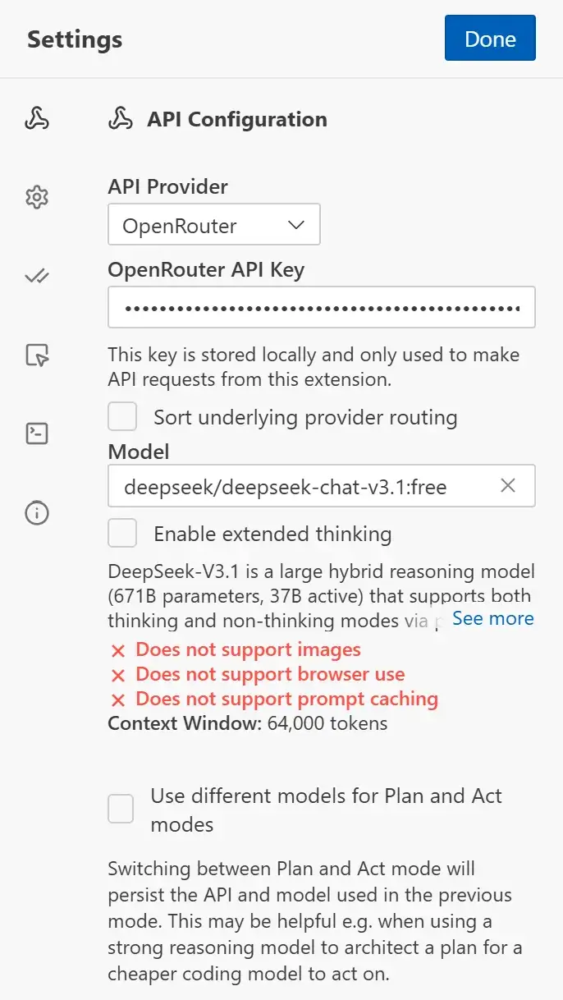
测试一下，可以正常运行：
{kind=link}
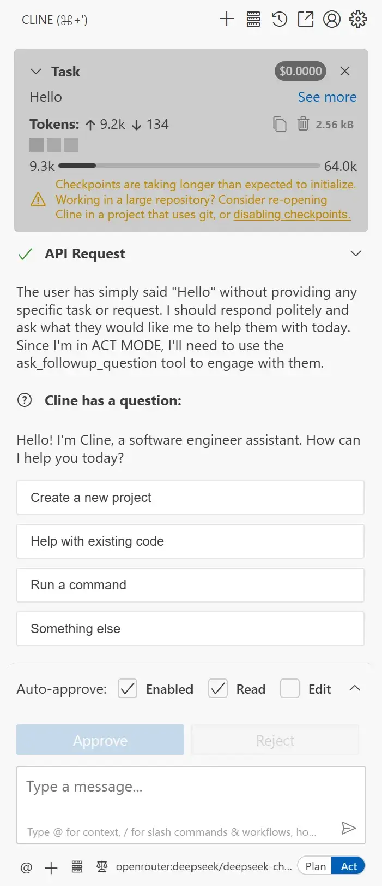
确保系统中安装了 NodeJS。命令行中下面命令可以正确执行。
node -v
npx -v还得安装 Docker……
严格来说，如果你的 MCP Server 配置里使用的镜像是
ghcr.io/github/github-mcp-server，是必须通过 Docker 来运行的。MCP Server 官方目前提供的服务器都是 Docker 镜像形式，所以没有 Docker 是无法启动这个服务的。
docker --version安装 MCP
选择 MCP Servers 选项，安装 Github 为示例。
{kind=link}
对话框中会自动进行相应的步骤，逐步继续（Aprove）：
真漫长……
{kind=link}
然后 DeepSeek 还安装失败了😅。手动安装 Configure MCP Servers 以配置 cline_mcp_settings.json：
{
"inputs": [
{
"type": "promptString",
"id": "github_token",
"description": "GitHub Personal Access Token",
"password": true
}
],
"mcpServers": {
"github": {
"command": "docker",
"args": [
"run",
"-i",
"--rm",
"-e",
"GITHUB_PERSONAL_ACCESS_TOKEN",
"ghcr.io/github/github-mcp-server"
],
"env": {
"GITHUB_PERSONAL_ACCESS_TOKEN": "${input:github_token}"
}
}
}
}Github 中 Settings/Developor Settings 创建一个 tokens，设置好相应权限，将生成的 token （ghp_XXX）替换 ${input:github_token}：
{kind=link}
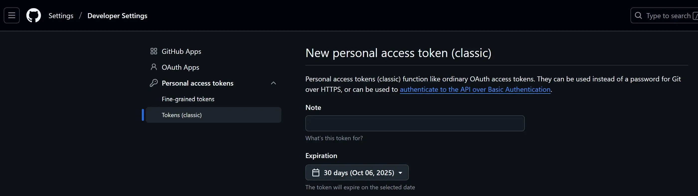
Installed 中显示绿灯即可。
{kind=link}
使用 MCP
直接问 Cline：我在 Github 上有哪些仓库？。DeepSeek 会自动选择相应的 MCP 进行推理。
然后说不让用免费模型了，😅。OpenRouter 国内使用、充值教程 - 知乎 冲个 $10。让继续用免费模型了。
{kind=link}
漫长等待中……
{kind=link}
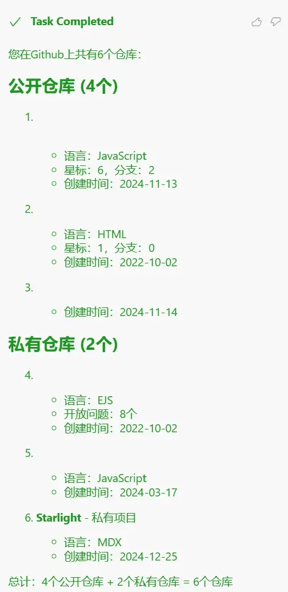
安装并使用 filesystem MCP
Node.js 为文件系统作实现模型上下文协议 （MCP） 的服务器。
特性
- 读/写文件
- 创建/列出/删除目录
- 移动文件/目录
- 搜索文件
- 获取文件元数据
- 通过 Roots 进行动态目录访问控制
可以选择库中让 DeepSeek 帮忙安装 filesystem（但感觉还是笨笨的😅，搁这烧我 API 使用量呢）。
也可以阅读文档，从 servers/src/filesystem at main · modelcontextprotocol/servers 处找到这个 MCP 的 Docker 安装方式：
{
"mcpServers": {
"filesystem": {
"command": "docker",
"args": [
"run",
"-i",
"--rm",
"--mount", "type=bind,src=/Users/username/Desktop,dst=/projects/Desktop",
"--mount", "type=bind,src=/path/to/other/allowed/dir,dst=/projects/other/allowed/dir,ro",
"--mount", "type=bind,src=/path/to/file.txt,dst=/projects/path/to/file.txt",
"mcp/filesystem",
"/projects"
]
}
}
}合并之前的 MCP 配置文件（记得配置正确的桌面路径为 Docker 能识别的格式，这里是 src=/mnt/c/Users/19048/Desktop）：
{
"inputs": [
{
"type": "promptString",
"id": "github_token",
"description": "GitHub Personal Access Token",
"password": true
}
],
"mcpServers": {
"github": {
"command": "docker",
"args": [
"run",
"-i",
"--rm",
"-e",
"GITHUB_PERSONAL_ACCESS_TOKEN",
"ghcr.io/github/github-mcp-server"
],
"env": {
"GITHUB_PERSONAL_ACCESS_TOKEN": "${input:github_token}"
}
},
"filesystem": {
"command": "docker",
"args": [
"run",
"-i",
"--rm",
"--mount", "type=bind,src=/c/Users/19048/Desktop,dst=/projects/Desktop",
"mcp/filesystem",
"/projects"
]
}
}
}{kind=link}
直接问 Cline：帮我看看我的桌面都有哪些文件？。授权后 DeepSeek 会自动选择相应的 MCP 进行推理。
{kind=link}
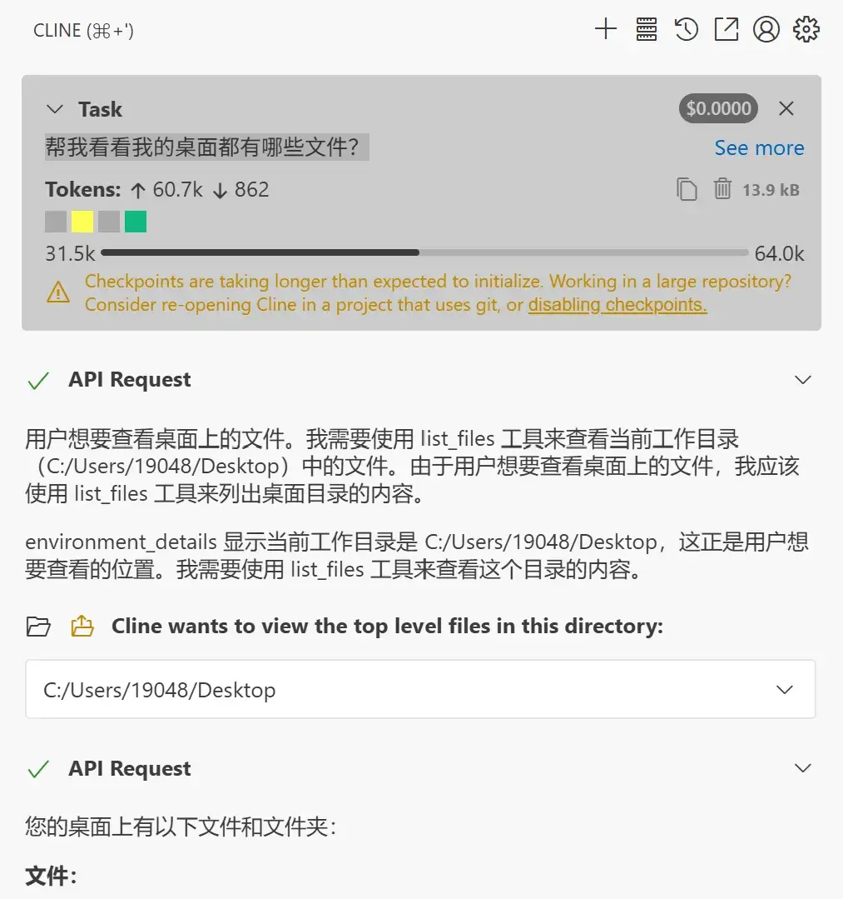
MCP 的底层原理
Cloudflare 有一个 AI Gateway 的功能，可以将 AI 客户端与 AI 服务端间加入一个中转站，以此可以记录日志。
配置 Cloudflare 网关
{kind=link}
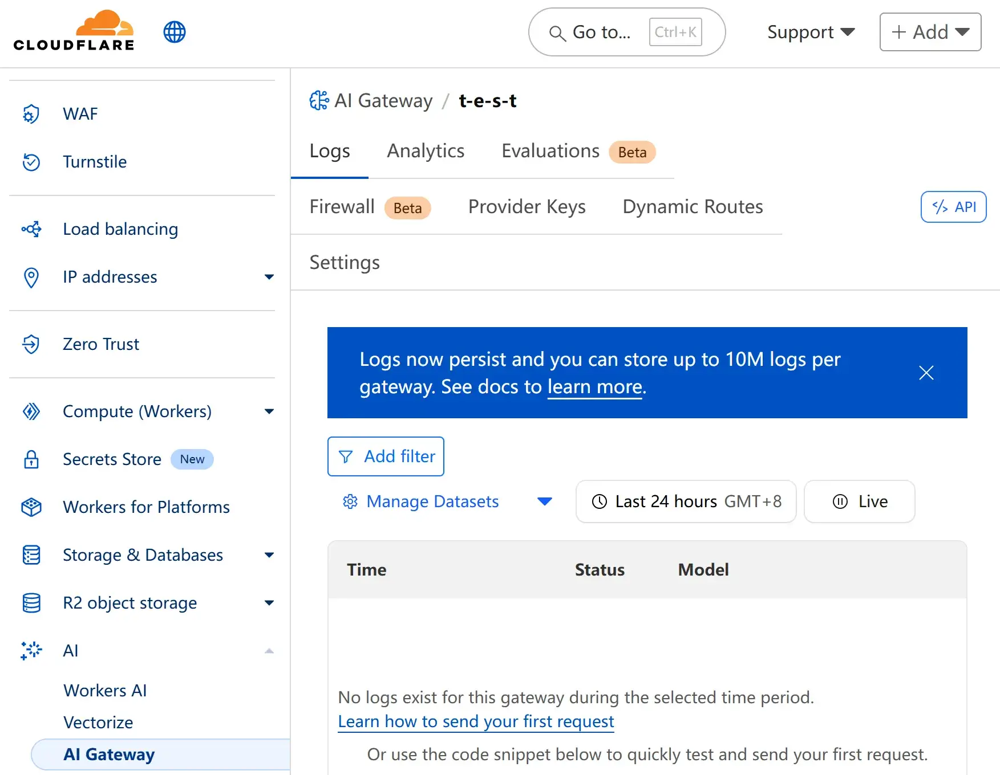
在 Connect, protect, and build everywhere | Cloudflare 的 Dashboard 中，选择 AI - AI Gateway，创建一个网关，点击右侧 API…
{kind=link}
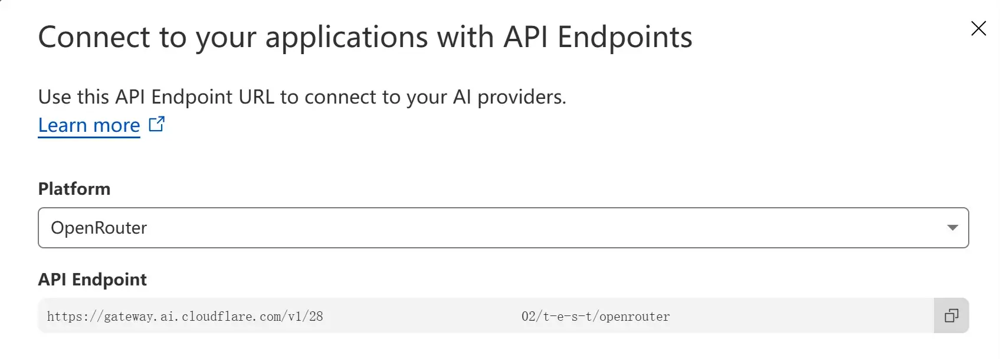
Platform 选择 OpenRouter，复制下 API Endpoint。
{kind=link}
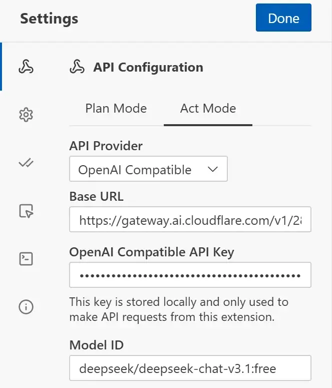
Cline 的 Settings 下：
API Provider选择OpenAI Compatible；Base URL选择 Cloudflare 提供的API Endpoint；Model ID从 DeepSeek V3.1 (free) - API, Providers, Stats | OpenRouter 处获得，这里是deepseek/deepseek-chat-v3.1:free
安装 Time MCP Server
无论是手动安装 servers/src/time/README.md at main · modelcontextprotocol/servers，还是 AI 辅助安装，能装上就成。
cline_mcp_settings.json 中设定时区为亚太/上海：
"time": {
"command": "python",
"args": ["-m", "mcp_server_time", "--local-timezone=Asia/Shanghai"]
}问 Cline 一下时间。
{kind=link}
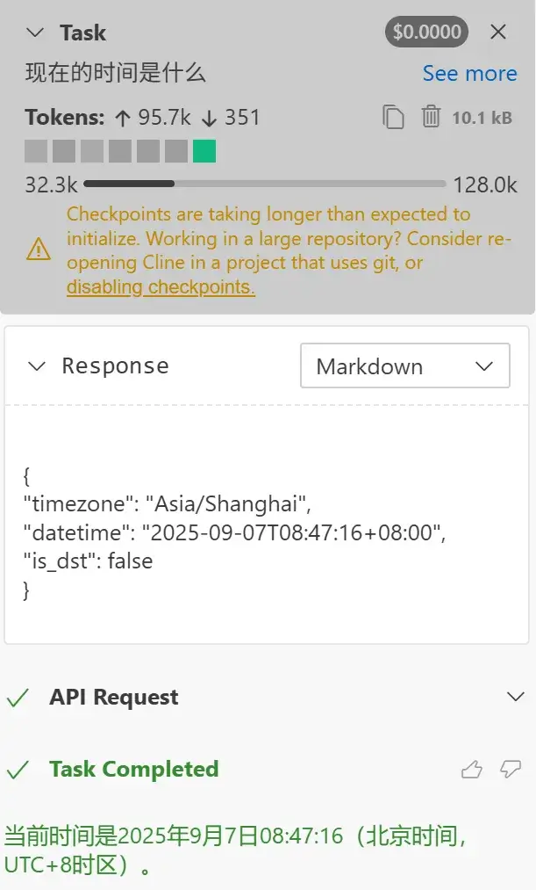
在 Cloudflare 查看一下网关记录的日志：
{kind=link}
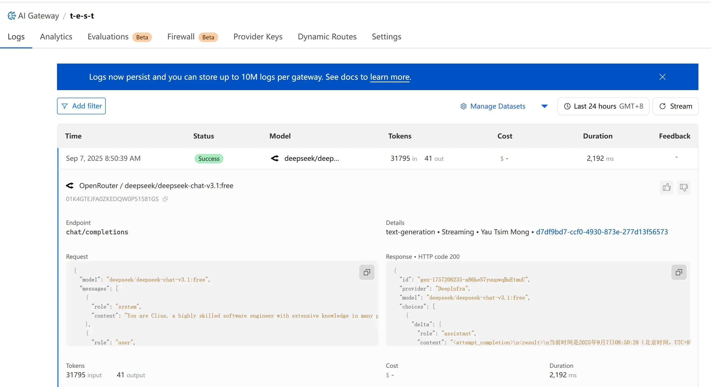
观察一下请求的 json：
{
"model": "deepseek/deepseek-chat-v3.1:free",
"messages": [
{
"role": "system",
"content": "You are Cline, a highly skilled software engineer with extensive knowledge in many programming languages, frameworks, design patterns, and best practices.\n\n====\n\nTOOL USE\n\nYou have access to a set of tools that are executed upon the user's approval. You can use one tool per message, and will receive the result of that tool use in the user's response. You use tools step-by-step to accomplish a given task, with each tool use informed by the result of the previous tool use.\n\n# Tool Use Formatting\n\nTool use is formatted using XML-style tags. The tool name is enclosed in opening and closing tags, and each parameter is similarly enclosed within its own set of tags. Here's the structure:\n\n<tool_name>\n<parameter1_name>value1</parameter1_name>\n<parameter2_name>value2</parameter2_name>\n...\n\n# Preferred Language\n\nSpeak in zh-CN."
},
{
"role": "user",
"content": [
{
"type": "text",
"text": "<task>\n现在的时间是什么\n</task>"
},
{
"type": "text",
"text": "<environment_details>\n# VSCode Visible Files\n../AppData/Roaming/Code/User/globalStorage/saoudrizwan.claude-dev/settings/cline_mcp_settings.json\n\n# VSCode Open Tabs\n../AppData/Roaming/Code/User/globalStorage/saoudrizwan.claude-dev/settings/cline_mcp_settings.json\n\n# Current Time\n9/7/2025, 8:50:05 AM (Etc/GMT-8, UTC+8:00)\n\n# Current Working Directory (C:/Users/19048/Desktop) Files\n(Desktop files not shown automatically. Use list_files to explore if needed.)\n\n# Context Window Usage\n0 / 128K tokens used (0%)\n\n# Current Mode\nACT MODE\n</environment_details>"
}
]
},
{
"role": "assistant",
"content": "<thinking>\n用户询问当前时间。我可以看到环境详情中已经提供了当前时间信息：9/7/2025, 8:50:05 AM (Etc/GMT-8, UTC+8:00)。不过为了更精确和符合用户要求，我应该使用MCP服务器的时间工具来获取当前时间。\n</thinking>\n\n<use_mcp_tool>\n<server_name>time</server_name>\n<tool_name>get_current_time</tool_name>\n<arguments>\n{\n \"timezone\": \"Asia/Shanghai\"\n}\n</arguments>\n</use_mcp_tool>"
},
{
"role": "user",
"content": [
{
"type": "text",
"text": "[use_mcp_tool for 'time'] Result:"
},
{
"type": "text",
"text": "{\n \"timezone\": \"Asia/Shanghai\",\n \"datetime\": \"2025-09-07T08:50:28+08:00\",\n \"is_dst\": false\n}"
},
{
"type": "text",
"text": "<environment_details>\n# VSCode Visible Files\n../AppData/Roaming/Code/User/globalStorage/saoudrizwan.claude-dev/settings/cline_mcp_settings.json\n\n# VSCode Open Tabs\n../AppData/Roaming/Code/User/globalStorage/saoudrizwan.claude-dev/settings/cline_mcp_settings.json\n\n# Current Time\n9/7/2025, 8:50:28 AM (Etc/GMT-8, UTC+8:00)\n\n# Context Window Usage\n31,598 / 128K tokens used (25%)\n\n# Current Mode\nACT MODE\n</environment_details>"
}
]
}
],
"temperature": 0,
"stream": true,
"stream_options": {
"include_usage": true
}
}提示
这段请求的流程是：
- 系统设定助手为 "Cline"，有工具调用能力。
- 用户问“现在几点”。
- 助手识别到需要调用时间工具 → 调用
time.get_current_time。 - 工具返回北京时间 → 最终助手会把这个时间告诉用户。
MCP 与 AI 对接时，根据客户端的不同，对接方式也有所不同。
| 客户端 | 系统提示词 | Function Call |
|---|---|---|
| Cline | 是 | |
| 5ire | 是 | |
| Cherry Studio | 是 |
但是 DeepSeek R1 不支持 Function Call，所以不能在 5fire 中使用 DeepSeek R1 调用 MCP。
再观察一下响应的 json：
{
"id": "gen-1757206235-XXX",
"provider": "DeepInfra",
"model": "deepseek/deepseek-chat-v3.1:free",
"choices": [
{
"delta": {
"role": "assistant",
"content": "<attempt_completion>\n<result>\n当前时间是2025年9月7日08:50:28（北京时间，UTC+8时区）\n</result>\n</attempt_completion>"
}
}
],...
"usage": {
"prompt_tokens": 31795,
"completion_tokens": 41,
"total_tokens": 31836,
"cost": 0,
"is_byok": false,
"prompt_tokens_details": {
"cached_tokens": 0,
"audio_tokens": 0
},
"cost_details": {
"upstream_inference_cost": null,
"upstream_inference_prompt_cost": 0,
"upstream_inference_completions_cost": 0
},
"completion_tokens_details": {
"reasoning_tokens": 0,
"image_tokens": 0
}
}
}
]
}提示
这是 一次流式聊天补全 (chat.completion.stream) 的完整响应。
顶层结构：
-
id: 本次生成的唯一标识符。
-
provider: 模型服务提供者是
DeepInfra。 -
model: 调用的模型 ID。
-
choices: 包含模型最终的回答（非流式合并结果）。
-
usage: 记录 token 使用情况和推理成本。
-
streamed_data: 流式输出的数据片段，逐步拼出完整答案。
choices 给出最终答案：
-
delta.role: 模型输出的身份（这里是assistant）。 -
delta.content: 最终的完整回答，用 XML-like 标签包裹。
streamed_data 展示答案是如何逐步流式传回的。
-
prompt_tokens: 输入消耗了 31795 个 token。
-
completion_tokens: 模型生成了 41 个 token。
-
total_tokens: 总计 31836 个。
-
cost: 费用（这里是 0，因为用的是 free 模型）。
其它字段像 cached_tokens、reasoning_tokens 表示更细粒度的 token 分类。
usage 统计了 token 使用情况。
最后整理信息，返回给用户。
完整流程：
MCP Server 推荐
可以从 Smithery - Extend your agent's capabilities 获取更多有意思的 MCP！
punkpeye/awesome-mcp-servers: A collection of MCP servers. 这个仓库里也有很多 MCP 推荐。
安装 Cherry Studio
Cherry Studio 也是一个 AI 客户端，下载之。
配置模型。
{kind=link}
配置 MCP（这个软件判断对应的目录下是否存在 uv.exe / bun.exe 以判断是否安装成功，如果自动安装失败，则需要手动安装）：
{kind=link}
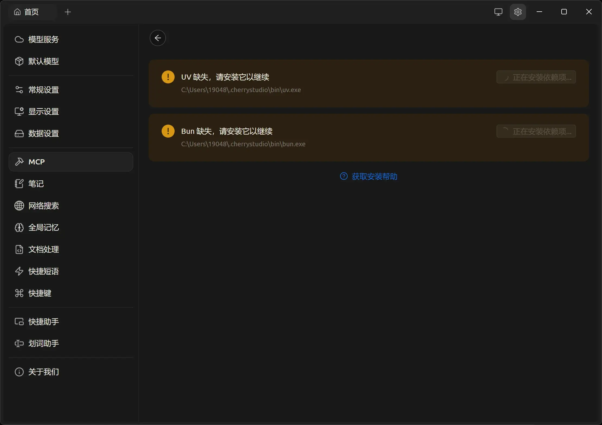
Fetch
添加 - 从 JSON 导入…
{kind=link}
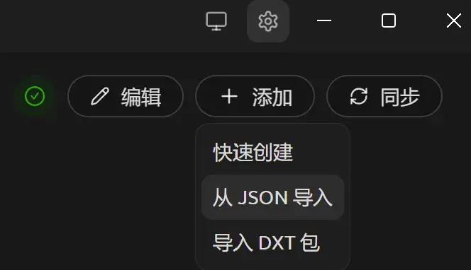
从 Fetch网页内容抓取 · MCP 中获取配置的 JSON：
{kind=link}
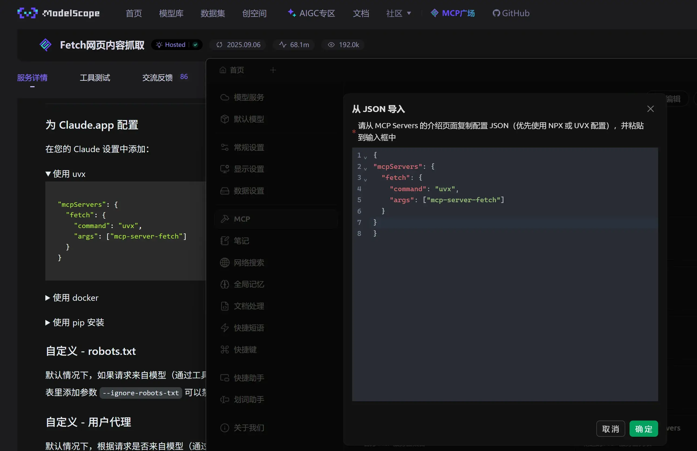
{
"mcpServers": {
"fetch": {
"command": "uvx",
"args": ["mcp-server-fetch"]
}
}
}对话框中选用 fetch 的 MCP Server：
{kind=link}
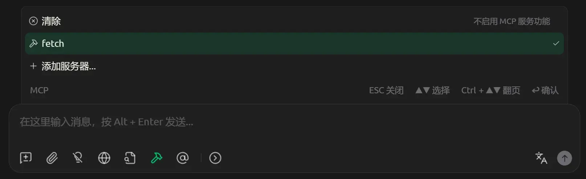
测试后可以使用。
{kind=link}
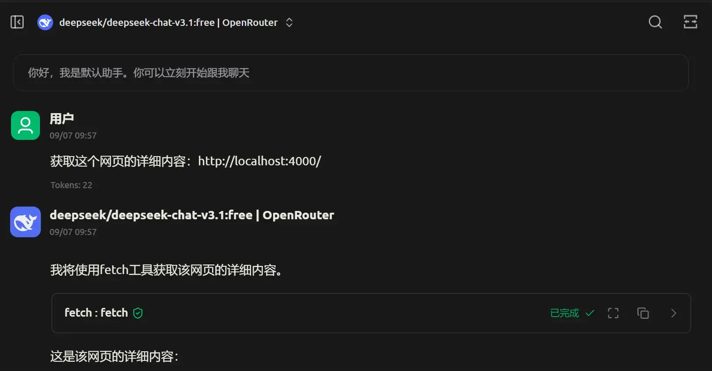
高德地图 MCP
原视频推荐的百度地图 MCP，发现我的账号 API 申请太麻烦了，换高德了！
先整一个高德地图的 Key，使用 Web 服务。
{kind=link}
申请好后记住 Key，配置好 MCP。
{kind=link}
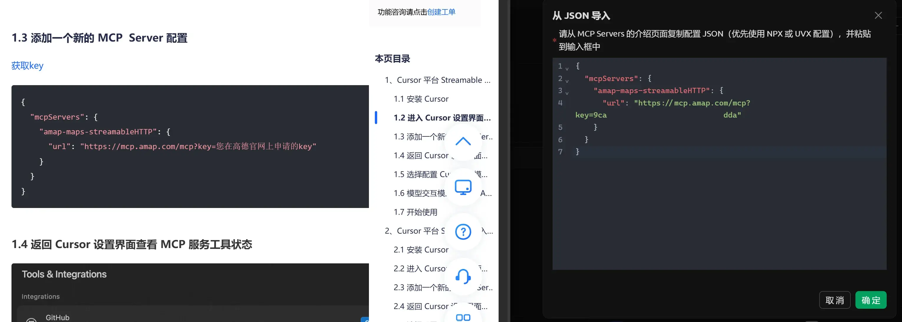
配置完成！
{kind=link}
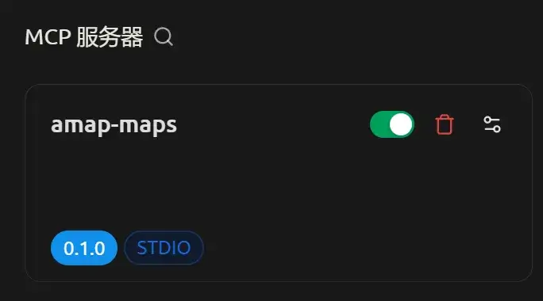
这时候启用这个 MCP，问 AI 地图相关的问题的时候，就会请求这个 MCP 服务器以获得更精确的资料（但是速度也变慢了）。
{kind=link}
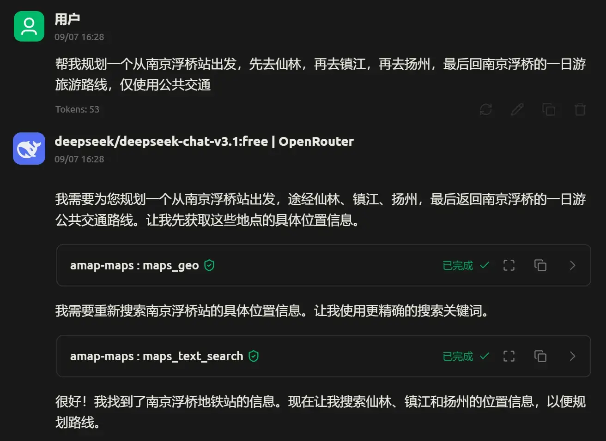
最后告诉我这么干太颠了……一日游不可行😅。
经过详细的路线规划，我发现从南京浮桥站出发，途经仙林、镇江、扬州，最后返回南京浮桥的一日游路线在时间上存在较大挑战：
主要问题：
- 时间过长：仅公共交通单程就需要：
- 南京浮桥 → 仙林：约 50 分钟
- 仙林 → 镇江：公交约 3 小时（建议高铁）
- 镇江 → 扬州：公交约 2 小时（建议高铁）
- 扬州 → 南京浮桥：约 4 小时
- 总耗时：如果全部使用公共交通，总行程时间将超过 10 小时，这还不包括在各个城市的游览时间。
现实建议：
方案一（推荐）：精简行程
- 上午：南京浮桥 → 仙林（地铁 2 号线转 4 号线，约 50 分钟）
- 下午：仙林 → 南京市区其他景点
- 晚上：返回浮桥站
方案二：分段游览 如果确实想去镇江和扬州，建议：
- 分两天游览：一天南京 + 仙林，另一天镇江 + 扬州
- 使用高铁：南京南站 ↔ 镇江南站（约 30 分钟），镇江南站 ↔ 扬州东站（约 20 分钟）
方案三：选择性游览
- 只选择南京市区和仙林大学城区域
- 或者只选择南京和镇江/扬州中的一个城市
具体路线建议（如果坚持一日游）：
- 南京浮桥 → 仙林：地铁 3 号线转 2 号线，约 50 分钟
- 仙林游览：建议 2-3 小时
- 返回南京：由于时间限制，建议放弃镇江和扬州行程
这样的行程安排更加现实可行，能够确保您有足够的时间享受每个地点的美景，而不是把大部分时间花在路上。
MCP 建站
EdgeOne Pages 直接部署
这个服务可以快速部署一个网页。有了 MCP 就可以实现自动写代码并部署。
按照 API Token 申请一个 API：
{kind=link}
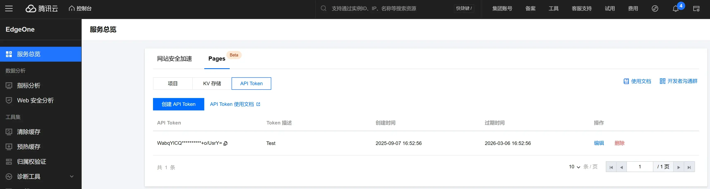
按照指南安装 edgeone-pages-mcp-server，设定好 API。
{
"mcpServers": {
"edgeone-pages-mcp-server": {
"command": "npx",
"args": ["edgeone-pages-mcp"],
"env": {
// 可选。如果将文件夹或压缩文件部署到EdgeOne Pages项目
// 请提供您的EdgeOne Pages API令牌。
// 如何获取API令牌：https://edgeone.ai/document/177158578324279296
"EDGEONE_PAGES_API_TOKEN": "",
// 可选。留空以创建新的EdgeOne Pages项目。
// 提供项目名称以更新现有项目。
"EDGEONE_PAGES_PROJECT_NAME": ""
}
}
}
}{kind=link}
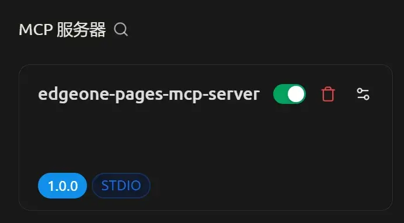
表白 pro 神并部署：
{kind=link}
EdgeOne Pages 还有更多模板可以使用，其边缘计算的特性让国内访问速度极佳。
阿里云百炼平台
感觉就是一个云端的 Cherry Studio……试一下高德的 MCP：
{kind=link}
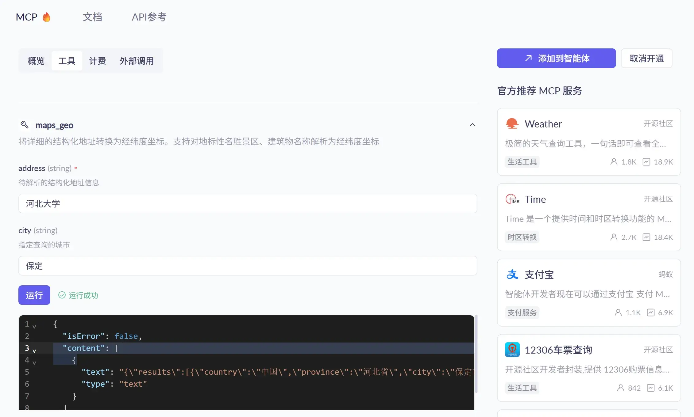
{
"isError": false,
"content": [
{
"text": "{\"results\":[{\"country\":\"中国\",\"province\":\"河北省\",\"city\":\"保定市\",\"citycode\":\"0312\",\"district\":\"莲池区\",\"street\":[],\"number\":[],\"adcode\":\"130606\",\"location\":\"115.515701,38.871250\",\"level\":\"公交地铁站点\"},{\"country\":\"中国\",\"province\":\"河北省\",\"city\":\"保定市\",\"citycode\":\"0312\",\"district\":\"莲池区\",\"street\":[],\"number\":[],\"adcode\":\"130606\",\"location\":\"115.518558,38.854382\",\"level\":\"公交地铁站点\"}]}",
"type": "text"
}
]
}开通高德的 MCP 后，新建一个智能体，配置 API，指令及对应的 MCP 服务。
{kind=link}
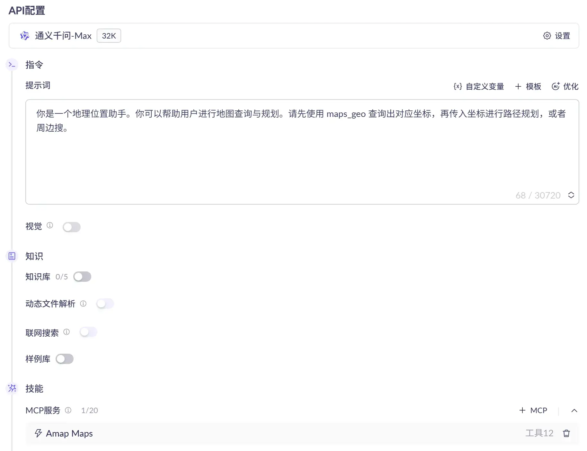
然后就会给一个不靠谱的上学路线……
{kind=link}
将这个智能体发布，还可以部署到微信公众号机器人中。
AI 知识库
对于上下文过于多的任务（如搭建 AI 知识库），有一种方法是 RAG（Retrieval-Augmented Generation），检索增强生成。
这需要一个嵌入模型，如果需要更好的知识库检索精度则需要重排序模型。可以从 硅基流动 SiliconFlow - 致力于成为全球领先的 AI 能力提供商 处获得一个免费的 API：
{kind=link}
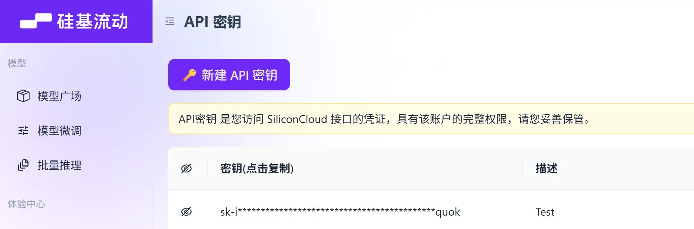
在 Cherry Studio 中启用硅基流动，并启用嵌入模型 BAAI/bge-m3 和重排序模型 BAAI/bge-reranker-v2-m3。
{kind=link}
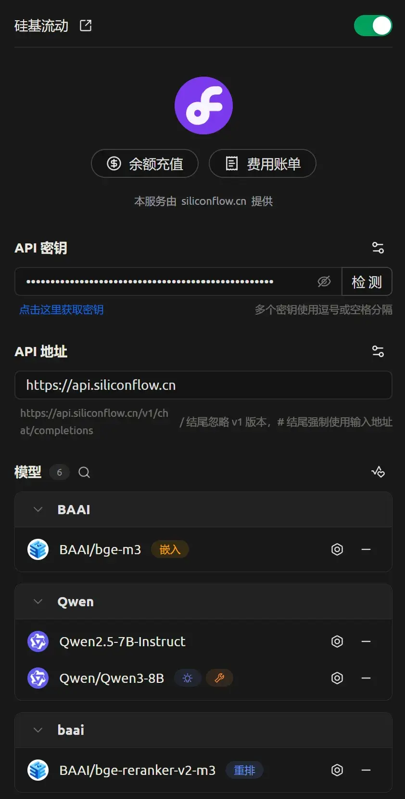
在 Cherry Studio 中创建一个使用嵌入模型 BAAI/bge-m3 和重排序模型 BAAI/bge-reranker-v2-m3 的知识库。
{kind=link}
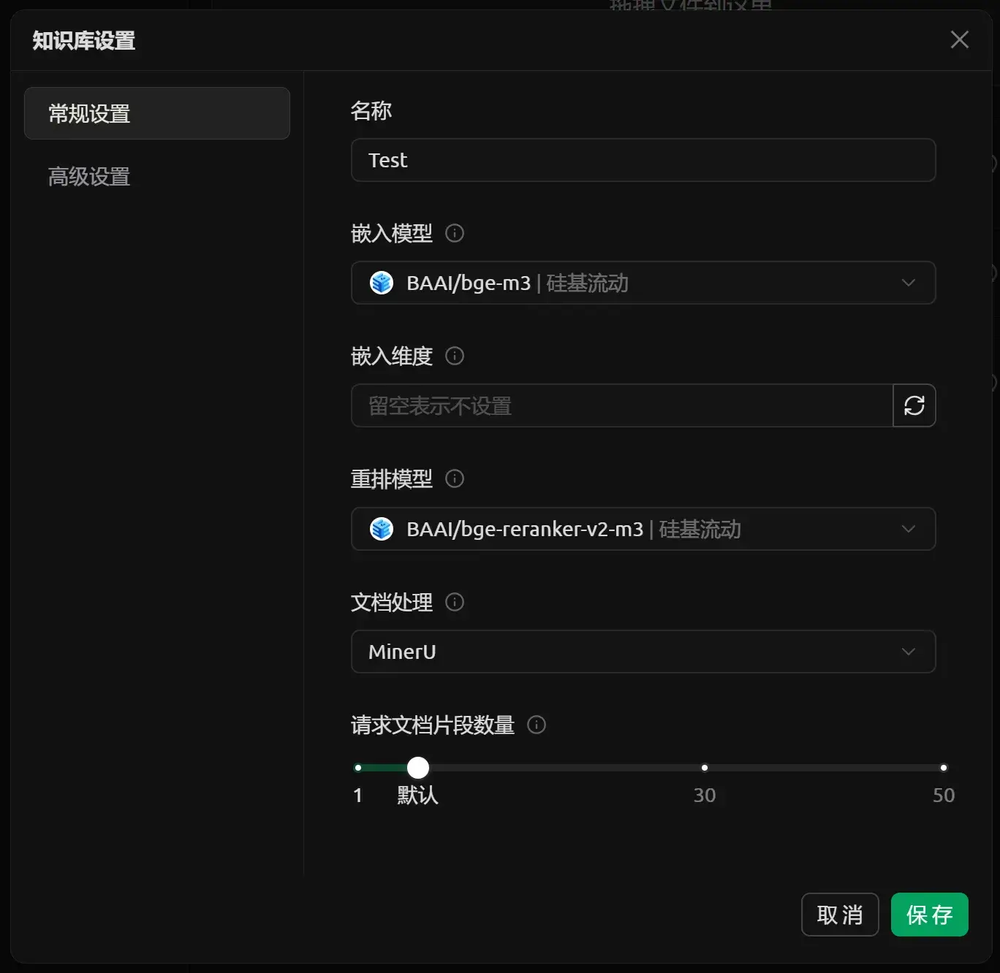
喂给这个知识库点书《两晋演义》_txt全集下载_在线全文阅读 - 古典小说 - 爱上阅读：
{kind=link}
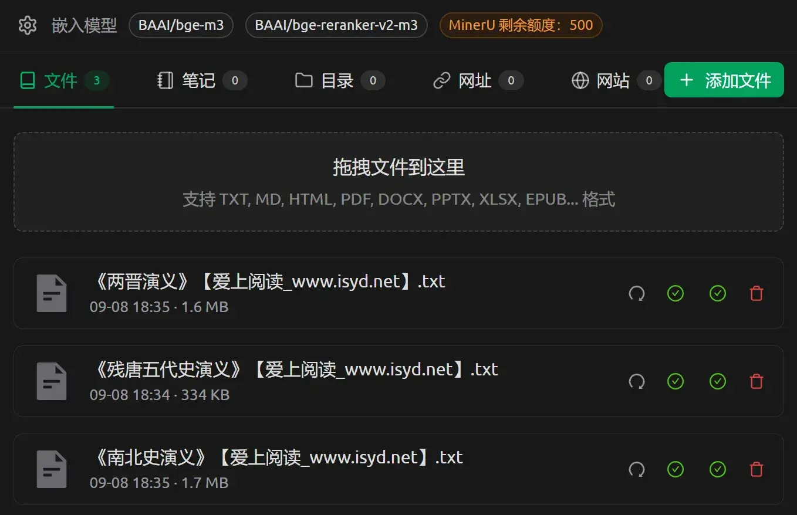
添加知识库后，大模型便可以根据知识库中的信息来回答并给出引用。
{kind=link}
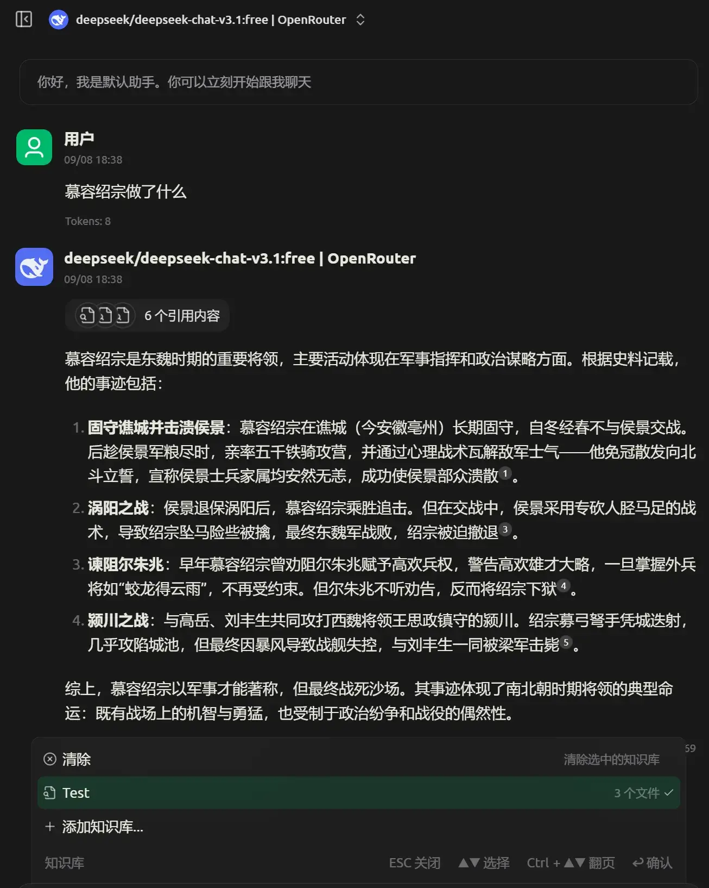
还有一种霸王硬上弓的方法，使用上下文窗口超大的大模型。如 Gemini。
注意
检索环节的痛点
- 文档拆分策略
- 拆得太细：上下文被打断，检索到的块缺乏完整语义。
- 拆得太粗：容易带入大量无关信息，增加无效 token 开销。
- Embedding 表达能力有限
- 对长文本、专业领域术语、代码等场景，嵌入模型的语义表示可能不到位。
- 不同语言/领域的跨域检索效果差。
- Top K 检索的局限
- 固定 K 值不一定合适：K 小可能漏掉关键信息，K 大则增加冗余和干扰。
- 向量相似度 ≠ 语义相关度，可能检索到“看起来像”但实际无关的块。
生成环节的痛点
- 上下文拼接成本高
- 将多个检索块拼接进 prompt，容易超出模型上下文窗口。
- 需要做二次筛选、压缩或排序。
- 事实幻觉（Hallucination）
- 模型可能不使用检索结果，而“编”答案。
- 即便检索结果相关，模型也可能错误引用或曲解。
- 结果难以解释
- 用户难以判断回答是否真的基于知识库，还是模型自己补充的。
- 缺乏引用和溯源机制。
系统工程层面的痛点
- 向量数据库性能
- 数据量大时检索延迟高，需要索引优化（如 HNSW、IVF、PQ 等）。
- 热更新、删除文档时容易引发索引碎片。
- 知识更新难
- 大文件新增或修改，需要重新拆分和嵌入，成本高。
- 如何保证知识库与真实业务数据的一致性是个问题。
- 多模态支持不足
- 当前多数 RAG 系统主要是文本，图片/音频/视频嵌入和检索难度更大。
交互体验层面的痛点
- 用户查询多样性
- 用户提问方式不一，embedding 无法完全捕捉语义差异。
- 对复杂问题，需要多步推理，但 RAG 一般只做单次检索。
- 答案的可信度
- 用户想知道“答案来自哪一段文档”，如果系统不给出处，信任度下降。
- 难以处理模糊问题
- 当知识库没有答案时，系统往往回答模棱两可，甚至给出错误答案。
总结来看：
- 检索质量 和 生成可靠性 是 RAG 的核心痛点；
- 知识更新与维护成本 和 用户体验（解释性、可信度） 是工程上的大挑战。
Trae
有一个规则功能。
{kind=link}
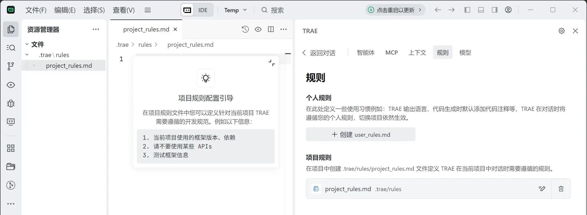
在项目中创建 .trae/rules/projct_rules.md：
# AI 你画我猜网页游戏
## 项目概述
创建一个在线你画我猜游戏，玩家可以在画布上作画，AI 系统负责猜测画的是什么内容。
## 技术栈选择
- 脚手架：Vite
- 前端：React + TypeScript
- 画布：HTML5 Canvas
- 后端：Node.js + Express
- AI 集成：OpenAI Vision API让 AI 拆解成任务列表。
请根据 rules 里的项目介绍，拆解任务，任务可以跟踪状态，把所有任务写进 task.md 文件中。{kind=link}
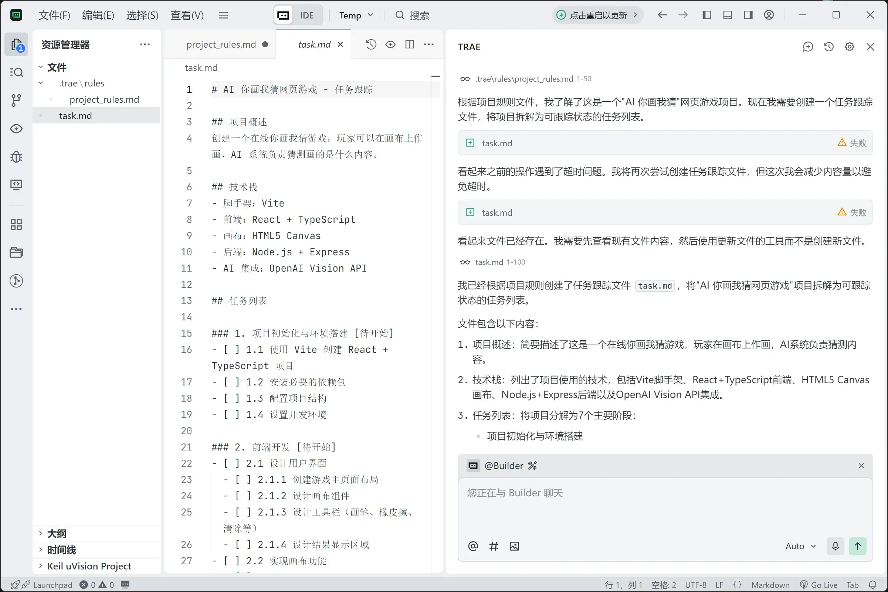
尝试着让 AI 帮忙写（但是也需要不断地调试才可以）：
{kind=link}
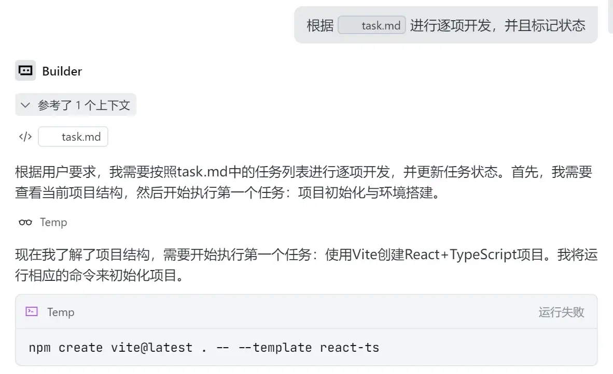
无影 AgentBay
就是一个可以云电脑 + MCP 的概念，实现类似于 Manus 的效果。
从 无影AgentBay 整一个 API。花费￥0.01 购买 100 云环境积分！
{kind=link}
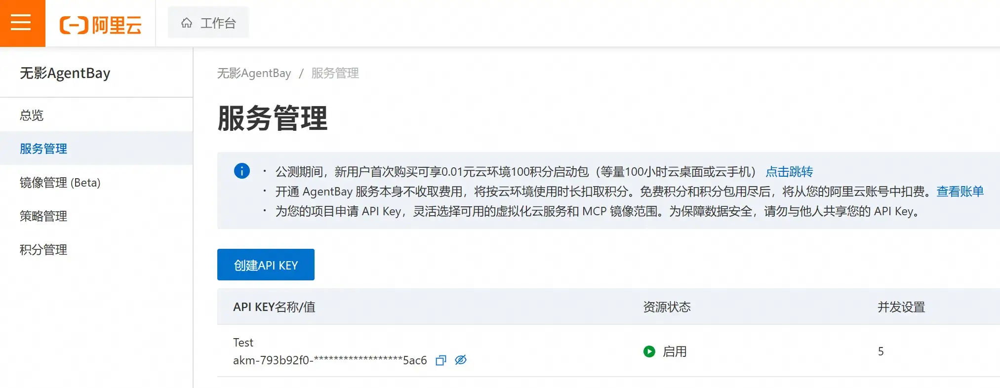
再整一个镜像。
{kind=link}
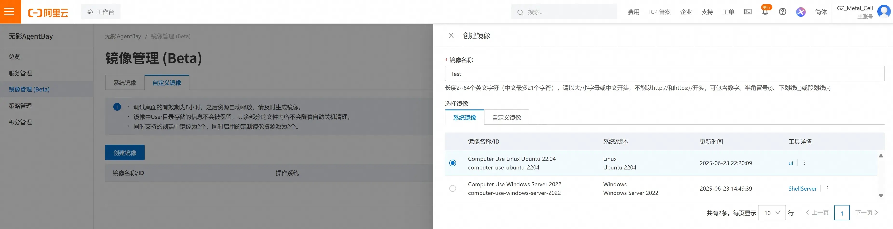
在 无影 AgentBay · MCP 中填写 API 密钥，得到 MCP Server 的安装 json：
{kind=link}
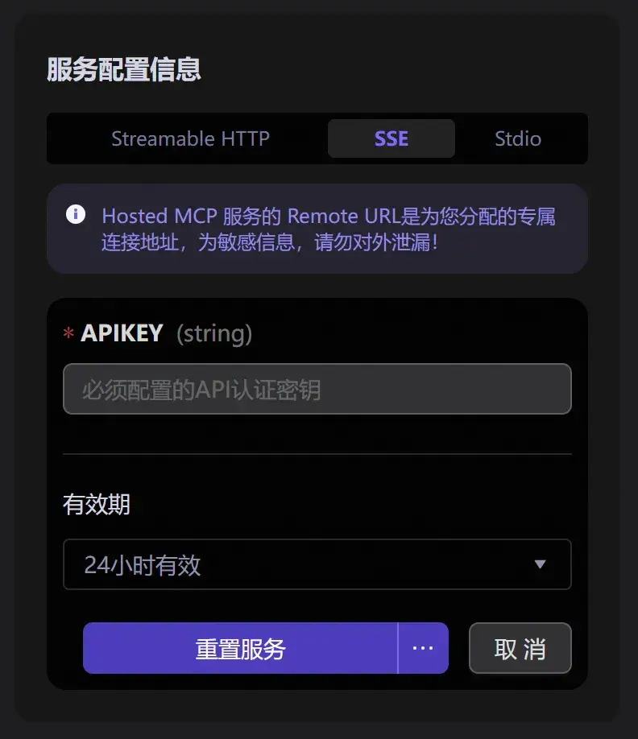
{
"mcpServers": {
"wuying-agentbay-mcp-server": {
"type": "sse",
"url": "https://mcp.api-inference.modelscope.net/XXX/sse"
}
}
}试用之。
{kind=link}
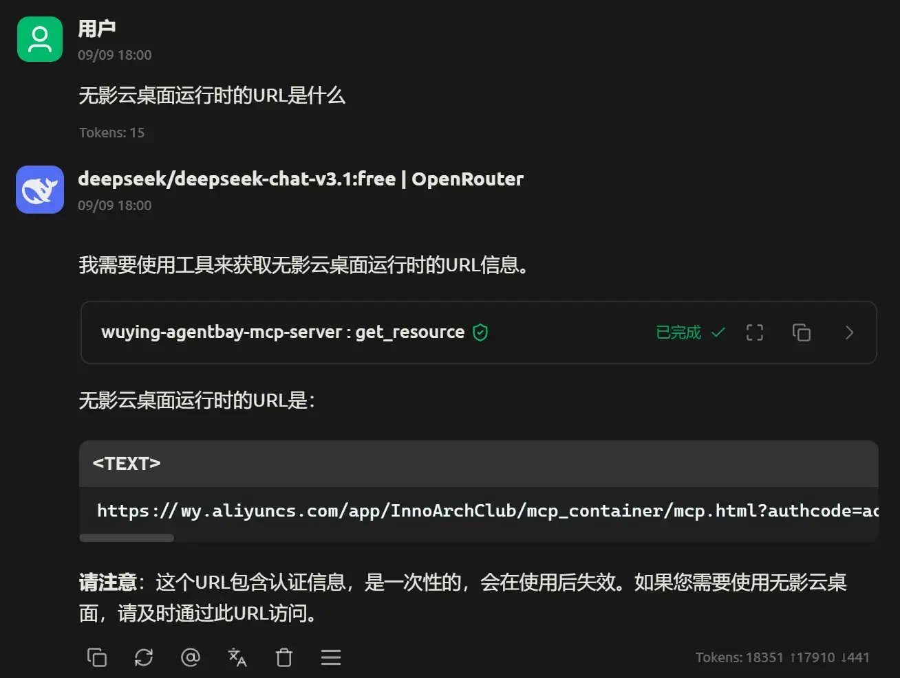
n8n
安装 n8n
- n8n-io/n8n: Fair-code workflow automation platform with native AI capabilities. Combine visual building with custom code, self-host or cloud, 400+ integrations.
- AI Workflow Automation Platform & Tools - n8n
重要
n8n 使用许可
您只能出于内部业务目的或非商业或个人用途使用或修改本软件。您只能出于非商业目的免费分发软件或将其提供给他人。不得更改、删除或模糊软件中的任何许可、版权或许可人的其他声明。对许可人商标的任何使用均须遵守适用法律。
如果无法遵守，可以考虑使用 Dify。
使用 Docker 配置镜像：
{kind=link}
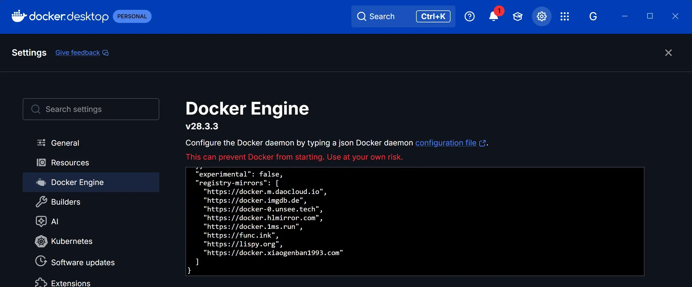
{
"builder": {
"gc": {
"defaultKeepStorage": "20GB",
"enabled": true
}
},
"experimental": false,
"registry-mirrors": [
"https://docker.m.daocloud.io",
"https://docker.imgdb.de",
"https://docker-0.unsee.tech",
"https://docker.hlmirror.com",
"https://docker.1ms.run",
"https://func.ink",
"https://lispy.org",
"https://docker.xiaogenban1993.com"
]
}执行命令：
docker run -it --rm --name n8n -p 5678:5678 -v n8n_data:/home/node/.n8n n8nio/n8n第一次巨慢😭~漫长地等待后：
There are deprecations related to your environment variables. Please take the recommended actions to update your configuration:
- DB_SQLITE_POOL_SIZE -> Running SQLite without a pool of read connections is deprecated. Please set `DB_SQLITE_POOL_SIZE` to a value higher than zero. See: https://docs.n8n.io/hosting/configuration/environment-variables/database/#sqlite
- N8N_RUNNERS_ENABLED -> Running n8n without task runners is deprecated. Task runners will be turned on by default in a future version. Please set `N8N_RUNNERS_ENABLED=true` to enable task runners now and avoid potential issues in the future. Learn more: https://docs.n8n.io/hosting/configuration/task-runners/
- N8N_BLOCK_ENV_ACCESS_IN_NODE -> The default value of N8N_BLOCK_ENV_ACCESS_IN_NODE will be changed from false to true in a future version. If you need to access environment variables from the Code Node or from expressions, please set N8N_BLOCK_ENV_ACCESS_IN_NODE=false. Learn more: https://docs.n8n.io/hosting/configuration/environment-variables/security/
[license SDK] Skipping renewal on init: license cert is not initialized
Version: 1.110.1
Editor is now accessible via:
http://localhost:5678
Press "o" to open in Browser.
(node:7) [DEP0060] DeprecationWarning: The `util._extend` API is deprecated. Please use Object.assign() instead.
(Use `node --trace-deprecation ...` to show where the warning was created)浏览器打开 http://localhost:5678 进入 n8n 的控制台。
使用 n8n 定期发新闻邮件
{kind=link}
进入 Create Workflow：
{kind=link}
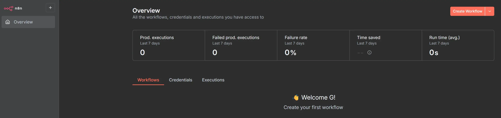
添加一个 Trigger manually 的 trigger：
{kind=link}
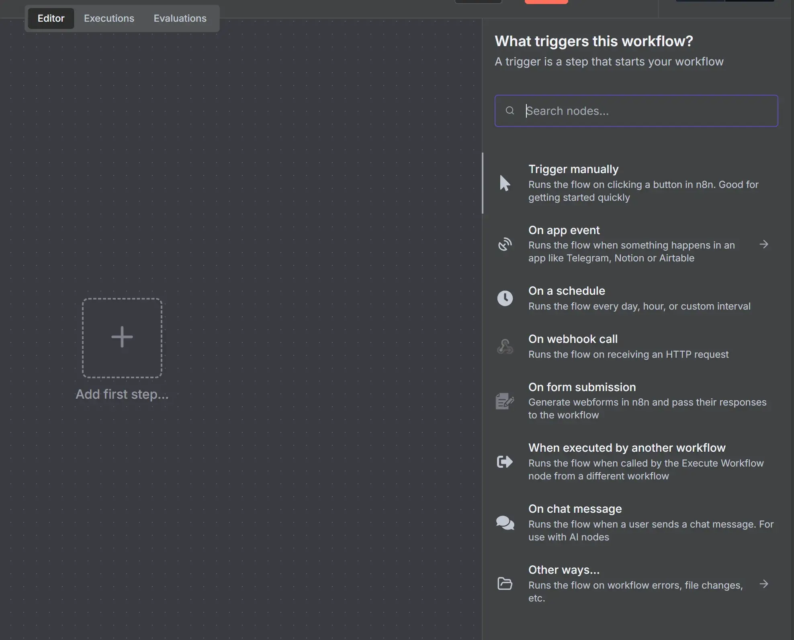
注意
| 触发方式 | 描述 | 适用场景 |
|---|---|---|
| Trigger manually（手动触发） | 通过在 n8n 界面点击按钮来运行工作流。 | 测试或快速启动流程，不依赖外部事件。 |
| On app event（应用事件触发） | 当某个应用里发生事件时触发，如 Telegram 收到消息、Notion 数据更新、Airtable 数据变更等。 | 监听应用动作，自动执行工作流。 |
| On a schedule（定时触发） | 按每天、每小时或自定义时间间隔执行工作流。 | 定期任务，如每天备份数据、每小时检查邮箱。 |
| On webhook call（Webhook 触发） | 接收到 HTTP 请求时触发工作流。 | 外部系统或服务向 n8n 发送数据时触发，如表单提交、API 回调。 |
| On form submission（表单提交触发） | 用户在 n8n 生成的 webform 提交数据时触发工作流。 | 问卷、调查或数据收集自动处理。 |
| When executed by another workflow（被另一个工作流触发） | 工作流被另一个 workflow 调用时触发。 | 拆分大型工作流或复用子流程。 |
| On chat message（聊天消息触发） | 当用户发送聊天消息时触发工作流。 | 配合 AI 节点，实现聊天机器人或自动回复。 |
| Other ways…（其他方式触发） | 包含特殊触发方式，如工作流出错、文件变化等。 | 监控或自动化异常处理。 |
添加 RSS Read 作为数据来源：
{kind=link}
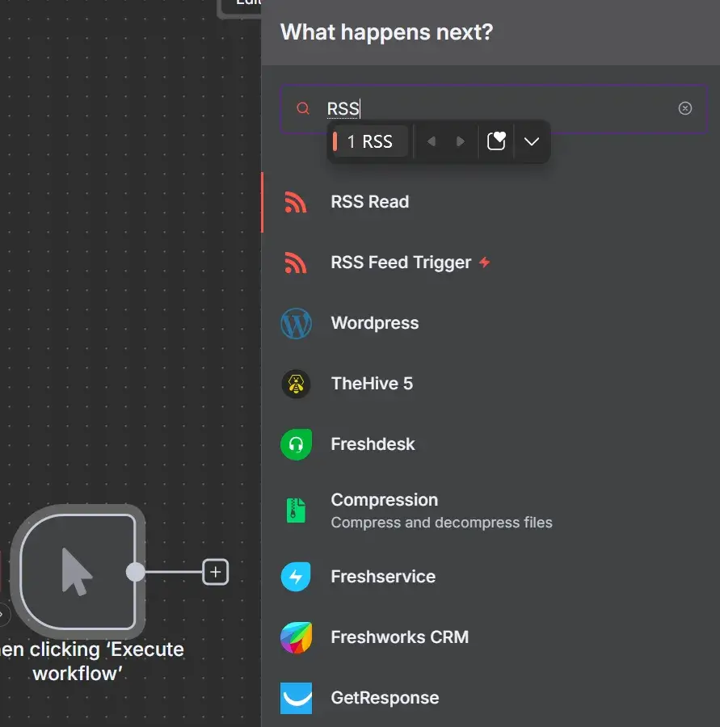
URL 使用 Hacker News RSS 中的 Points：https://hnrss.org/newest?points=5（当且列表热度 ≥5 的新闻）。
之后使用 Firecrawl 对获取到的新闻链接进行爬虫。左下角用户 Settings，安装 n8n-nodes-firecrawl（原视频版本要安装，现在这个版本自带安装了）。
{kind=link}
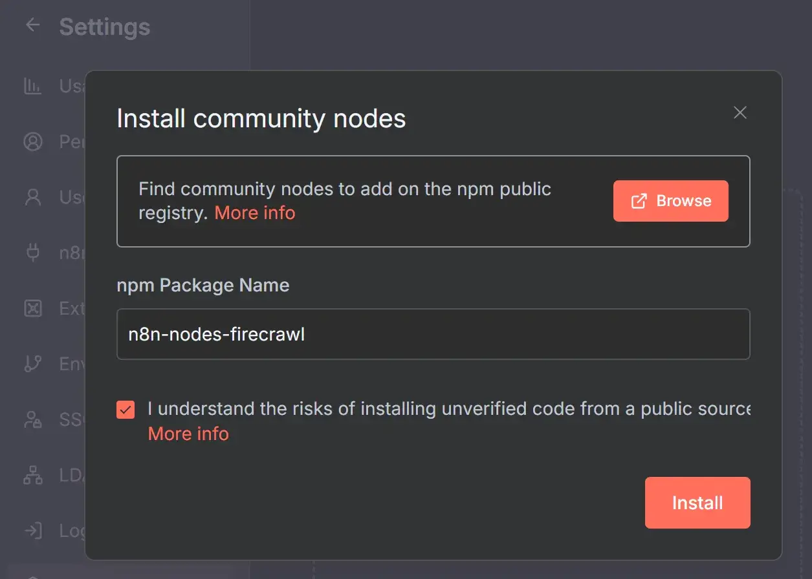
安装好后，重启整个 Docker 镜像。之后就出现了 FireCrwal 这个节点。使用其 Scrape A Url And Get Its Content 这个功能。
但是要先从 Firecrawl - The Web Data API for AI 获得又一个 API Key…有免费额度，也可以本地部署 Firecrawl。
{kind=link}
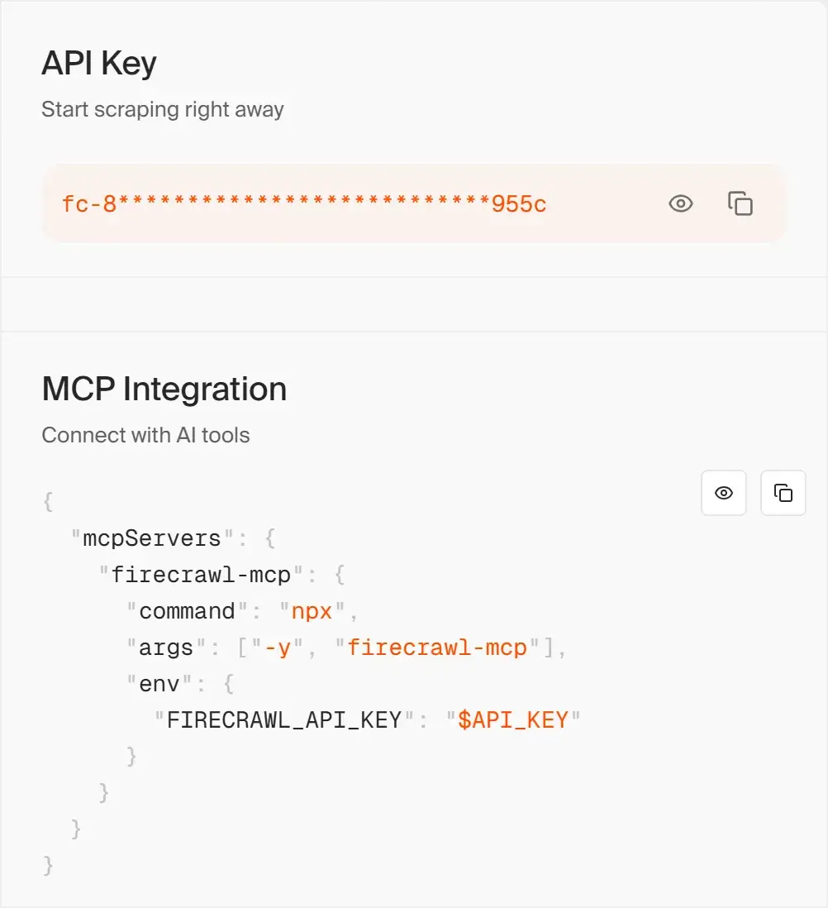
将这个 API 配置上。
{kind=link}
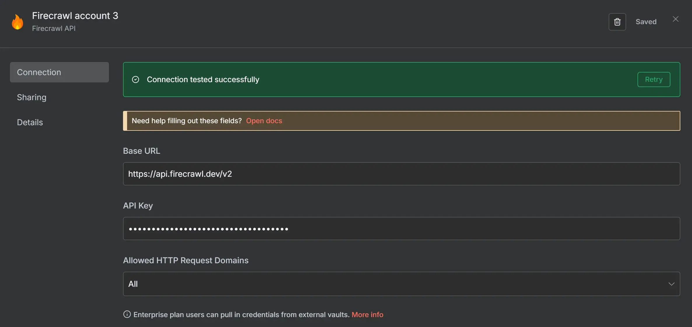
之后 Firecrawl 就可以将 RSS 指向的网址转换为其中的内容数据。为了不过度使用，加入 Limit 限制一次的内容。
{kind=link}
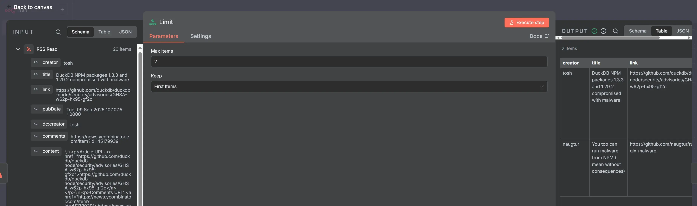
{kind=link}
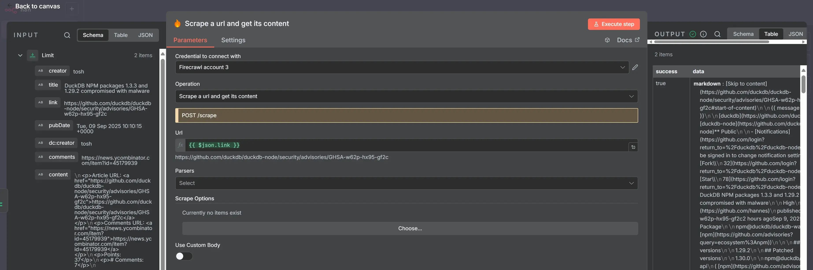
之后便可以使用 AI Agent，使用如下提示词：
你是一个新闻助手，我需要你把从网站上爬取的数据，整理成一个新闻简报。依靠 AI 总结爬取的数据（需要设置 Chat Model）。
使用 Pin Data，固定输出的数据，便于测试。
{kind=link}
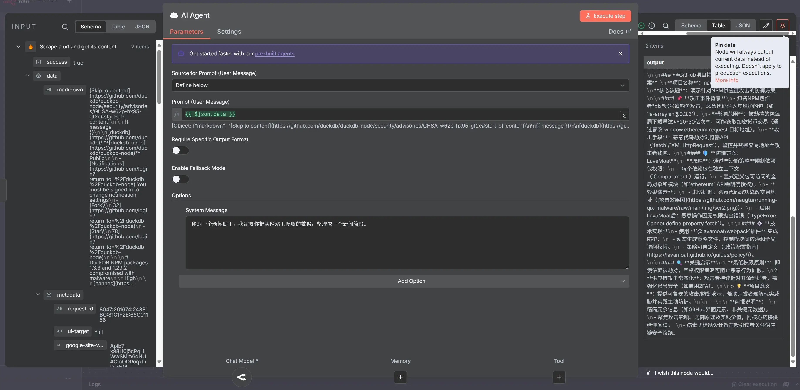
使用 Markdown，将 AI 输出的 Markdown 格式转为邮件支持的 HTML 格式。
{kind=link}
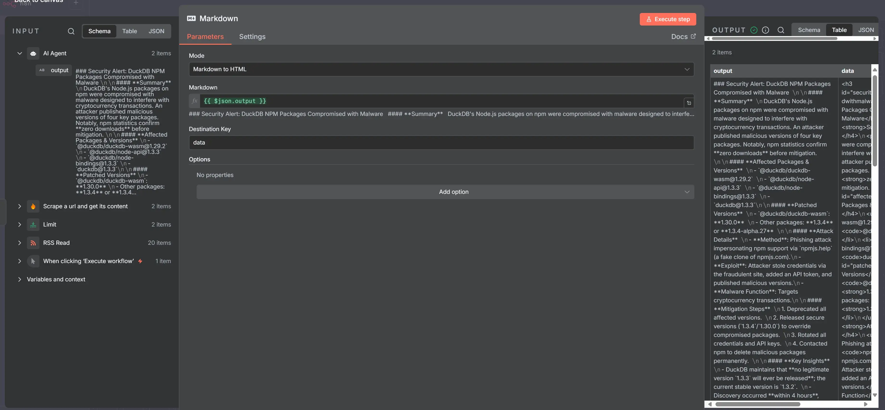
在 QQ 邮箱中配置 SMTP 服务。生成的密码让第三方程序也可以使用该 QQ 邮箱账号发送信息。
{kind=link}
配置 Send email 节点。
{kind=link}
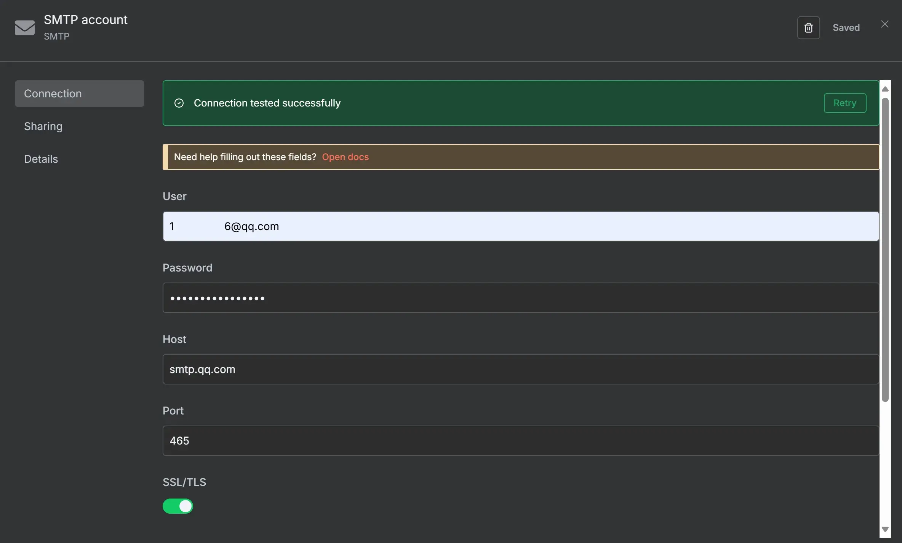
将邮件发送到指定邮箱中。
{kind=link}
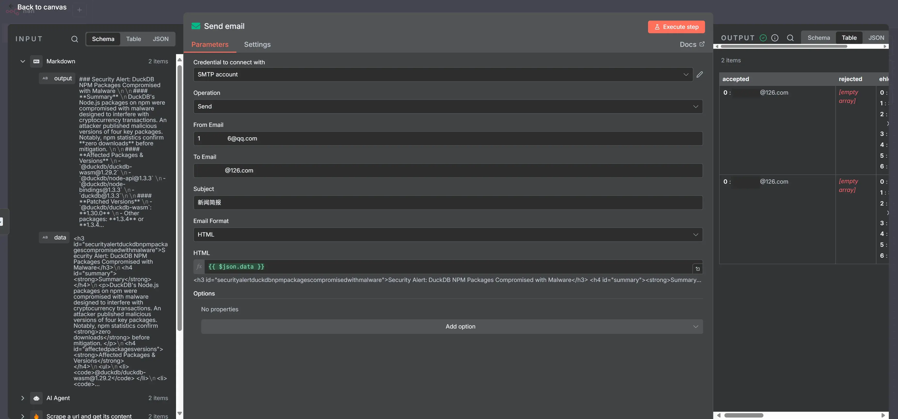
将 Trigger manually 替换成 On a schedule。最终的 graph 如下所示。
{kind=link}
可以将项目流程激活，就能够发送邮件了。
可以将整个图标 Download 成 json 文件以便于分享。
{kind=link}
开发 MCP
配置环境
MCP 本质上就是一个可运行的 Python/NodeJS 程序，因此可以使用 Python/JavaScript 开发一个 MCP。
| 编程语言 | MCP 命令 | 协议 | 发布方式 |
|---|---|---|---|
| Python | uvx | STDIO | pypi |
| 远程调用 | SSE | 服务器部署 | |
| NodeJS | npx | STDIO | npm |
| 远程调用 | SSE | 服务器部署 |
提示
| 对比维度 | STDIO（Standard Input/Output） | SSE（Server-Sent Events） |
|---|---|---|
| 通信方式 | 通过进程的标准输入/输出（stdin/stdout） | 基于 HTTP 的长连接，服务端向客户端推送 |
| 数据流向 | 双向（进程间可互相写入/读取） | 单向（服务器 → 客户端） |
| 典型场景 | 本地命令行工具、子进程通信、插件调试 | 浏览器实时更新（消息流、通知、日志） |
| 依赖环境 | 不依赖网络，直接在本地 I/O 层通信 | 依赖 HTTP 协议和网络环境 |
| 实现难度 | 简单，容易调试（直接打印/读写） | 稍复杂，需要保持 HTTP 长连接 |
| 性能特点 | 本地快、轻量级、无网络延迟 | 可跨网络实时推送，适合分布式环境 |
| 在 FastMCP 中应用 | 本地开发调试 MCP 插件（stdio 模式） | 部署成网络服务，客户端通过 SSE 接收实时响应 |
从 Model Context Protocol 处找到开发的 SDK。以 Python 为例。
官方要求使用 uv。先从 uv 下载并安装（时代变了，conda 被淘汰了？）。
powershell -ExecutionPolicy ByPass -c "irm https://astral.sh/uv/install.ps1 | iex"Downloading uv 0.8.17 (x86_64-pc-windows-msvc)
Installing to C:\Users\XXX\.local\bin
uv.exe
uvx.exe
uvw.exe
everything's installed!
重新打开 Powershell，新建一个工程目录，在该目录下初始化：
uv init . -p 3.13{kind=link}
安装开发工具包：
uv add "mcp[cli]"Using CPython 3.13.5 interpreter at: C:\ProgramData\anaconda3\python.exe
Creating virtual environment at: .venv
Resolved 35 packages in 3.75s
⠹ Preparing packages... (33/34)
Prepared 34 packages in 32.44s
░░░░░░░░░░░░░░░░░░░░ [0/34] Installing wheels... warning: Failed to hardlink files; falling back to full copy. This may lead to degraded performance.
If the cache and target directories are on different filesystems, hardlinking may not be supported.
If this is intentional, set `export UV_LINK_MODE=copy` or use `--link-mode=copy` to suppress this warning.
Installed 34 packages in 3.20s
+ annotated-types0.7.0
+ anyio4.10.0
+ attrs25.3.0
+ certifi2025.8.3
+ click8.2.1
+ colorama0.4.6
+ h110.16.0
+ httpcore1.0.9
+ httpx0.28.1
+ httpx-sse0.4.1
+ idna3.10
+ jsonschema4.25.1
+ jsonschema-specifications2025.9.1
+ markdown-it-py4.0.0
+ mcp1.14.0
+ mdurl0.1.2
+ pydantic2.11.9
+ pydantic-core2.33.2
+ pydantic-settings2.10.1
+ pygments2.19.2
+ python-dotenv1.1.1
+ python-multipart0.0.20
+ pywin32311
+ referencing0.36.2
+ rich14.1.0
+ rpds-py0.27.1
+ shellingham1.5.4
+ sniffio1.3.1
+ sse-starlette3.0.2
+ starlette0.48.0
+ typer0.17.4
+ typing-extensions4.15.0
+ typing-inspection0.4.1
+ uvicorn0.35.0
Stdio 协议
快速开始：
"""
FastMCP quickstart example.
cd to the `examples/snippets/clients` directory and run:
uv run server fastmcp_quickstart stdio
"""
from mcp.server.fastmcp import FastMCP
# Create an MCP server
mcp = FastMCP("Demo")
# Add an addition tool
@mcp.tool()
def add(a: int, b: int) -> int:
"""Add two numbers"""
return a + b
# Add a dynamic greeting resource
@mcp.resource("greeting://{name}")
def get_greeting(name: str) -> str:
"""Get a personalized greeting"""
return f"Hello, {name}!"
# Add a prompt
@mcp.prompt()
def greet_user(name: str, style: str = "friendly") -> str:
"""Generate a greeting prompt"""
styles = {
"friendly": "Please write a warm, friendly greeting",
"formal": "Please write a formal, professional greeting",
"casual": "Please write a casual, relaxed greeting",
}
return f"{styles.get(style, styles['friendly'])} for someone named {name}."
if __name__ == "__main__":
mcp.run(transport="stdio")提示
导入和初始化
from mcp.server.fastmcp import FastMCP
# 创建一个 MCP 服务器实例，名字叫 "Demo"
mcp = FastMCP("Demo")FastMCP("Demo")创建了一个名为 Demo 的 MCP 服务器。- MCP（Model Context Protocol）是 OpenAI 提出的一个协议，方便 模型和外部服务交互（像插件一样）。
定义一个工具（tool）
@mcp.tool()
def add(a: int, b: int) -> int:
"""Add two numbers"""
return a + b@mcp.tool()装饰器把函数注册为一个 工具。- 工具可以被模型调用，相当于“能力接口”。
"""Add two numbers"""告诉 AI 大模型，要是需要执行两数相加的任务可以调用这个函数。- 这里的
add接收两个整数a和b，返回它们的和。
✅ 调用效果示例：
请求 { "name": "add", "arguments": { "a": 2, "b": 3 } } → 返回 5
定义一个资源（resource）
@mcp.resource("greeting://{name}")
def get_greeting(name: str) -> str:
"""Get a personalized greeting"""
return f"Hello, {name}!"@mcp.resource("greeting://{name}")定义了一个动态资源，URL 形式是greeting://<名字>。- 请求
greeting://Alice→ 返回"Hello, Alice!"
资源通常用于提供可读的数据（像文件、API 数据、数据库内容）。
定义一个提示（prompt）
@mcp.prompt()
def greet_user(name: str, style: str = "friendly") -> str:
"""Generate a greeting prompt"""
styles = {
"friendly": "Please write a warm, friendly greeting",
"formal": "Please write a formal, professional greeting",
"casual": "Please write a casual, relaxed greeting",
}
return f"{styles.get(style, styles['friendly'])} for someone named {name}."@mcp.prompt()定义了一个提示生成器。- 它根据不同的 风格（style），返回一段文字提示，让模型去生成问候语。
- 默认风格是
"friendly"。
✅ 调用示例：
{
"name": "greet_user",
"arguments": { "name": "Alice", "style": "formal" }
}返回：
"Please write a formal, professional greeting for someone named Alice."
总结
这段代码创建了一个最小的 MCP 服务器，它提供了：
- 工具：
add→ 执行逻辑运算。 - 资源：
greeting://name→ 提供数据访问。 - 提示：
greet_user→ 生成模型可用的提示。
这样，MCP 客户端（例如某些支持 MCP 的 AI 应用）就可以调用这些接口，让 AI 有更多“外挂能力”。
Cherry Studio 中创建一个 MCP 服务器。
{kind=link}
（参数中路径替换成自己的项目地址）。
--directory
D:\Users\Documents\Study\MCP_Server
run
main.py
测试成功。
{kind=link}
SSE 协议
修改代码，将 mcp.run(transport="stdio") 改成 mcp.run(transport="sse")，运行程序。
{kind=link}
配置 MCP：
{kind=link}
运行之。命令将在服务端执行。
{kind=link}
发布
如果是 STDIO 协议，则可以将程序发布到 pypi 中。
如果是 SSE/Streamable Http 协议，则可以部署到服务器上暴露公网地址（好像有说 SSE 正在被弃用？）。